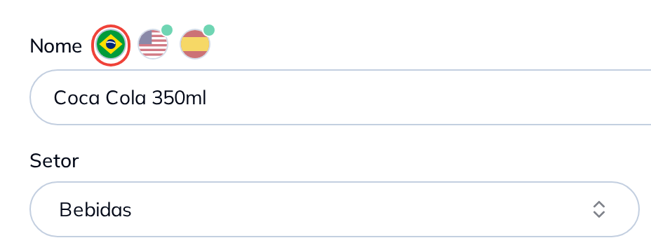

São três bandeirinhas na linha do nome, e um salvamento só guarda as três versões. O português continua ali do lado, intacto.

A bolinha verde é o seu mapa: ela marca a bandeira que já recebeu tradução, e o que ficou para depois você vê de longe.